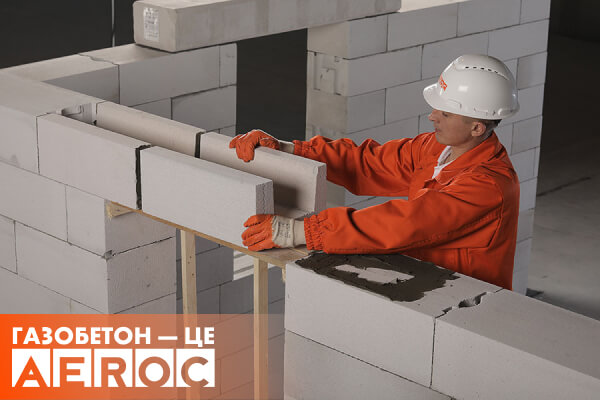
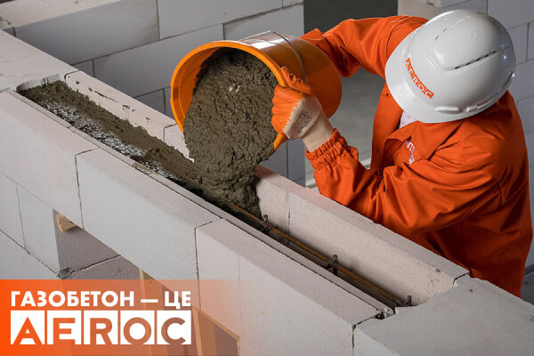

U-блоки з газобетону
U-блоки – це порожнисті газобетонні блоки, призначені для створення незнімної опалубки при виготовленні монолітних перемичок і балок. Їх довжина становить 500 мм, а ширина відповідає ширині стінових блоків. U-блоки AEROC виготовляються з готових газоблоків у формі фігурних виробів, яким задається відповідна форма шляхом випилювання.
Такий тип газоблоків широко застосовується для виготовлення дверних або віконних перемичок. Крім цього, U-блоки використовуються для зведення останнього ряду стіни кожного поверху майбутньої споруди. Це пов’язано з тим, що останній ряд являє собою бетонний армований пояс, на який згодом буде встановлено мауерлат, який передаватиме навантаження майбутньго даху на стіни з газобетонних блоків.
